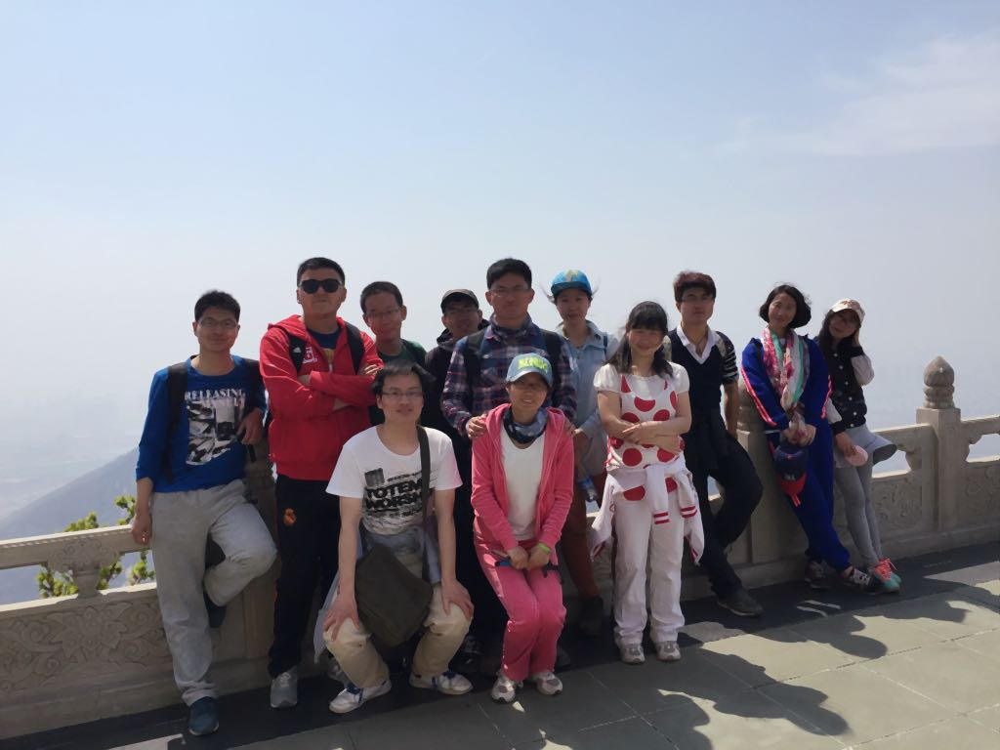

实验室成员组织大黑山登山活动！
供稿: qing 发表时间：04/2015【4/2015】实验室成员组织大黑山登山活动！
大黑山被誉为辽南第一山，原称大赫（大连方言，读三声）山、大和尚山、老虎山。位于大连市金州新区城东约5公里，主峰海拔663．1米，面积23.79平方公里，是一座呈“山”字型的山脉，北寄长白山、千山，南临黄海、渤海，因山石多呈淡黑色而得名。
大黑山是大连古文化的发祥地，集自然景观、人文景观于一身，被批准为国家AAA级景区、国家森林公园和国家地质公园，同时佛、道、儒三教合一，是辽东地区著名的宗教圣地，辽宁省文物保护单位，也是海滨城市登山旅游经典路线。
